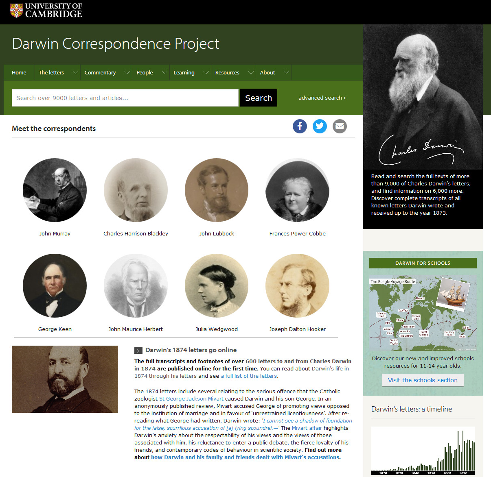
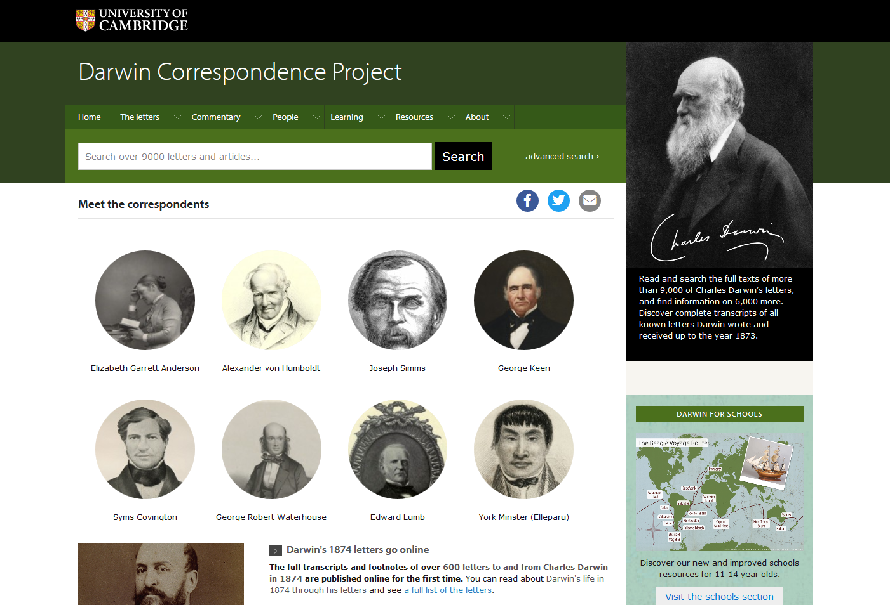
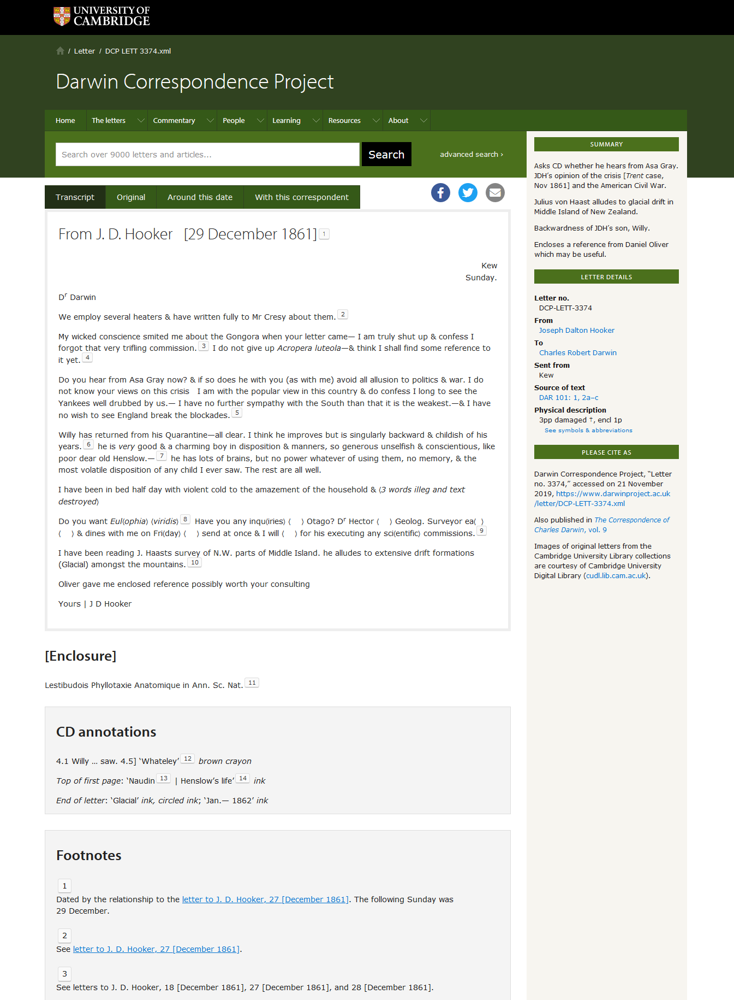
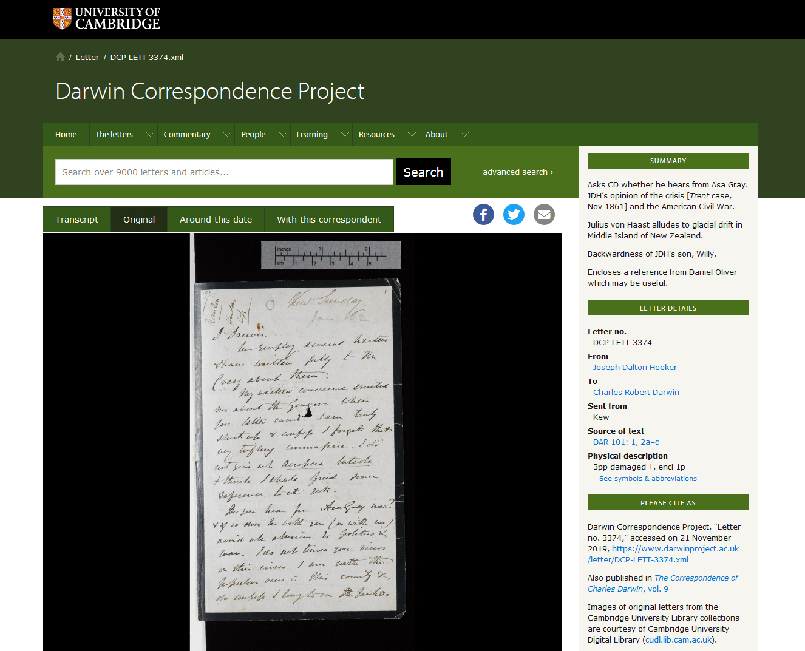
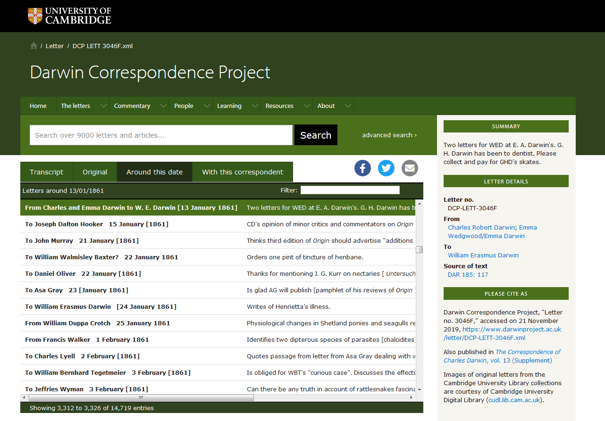
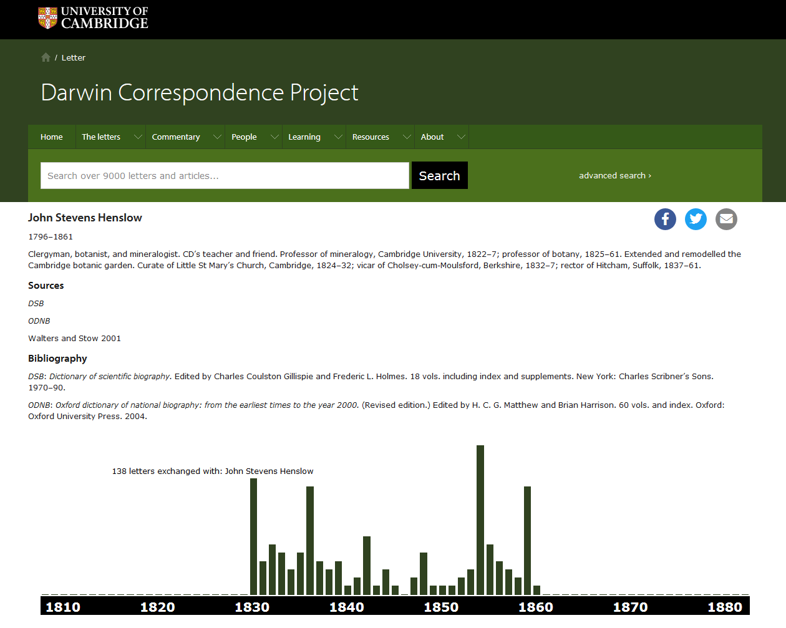
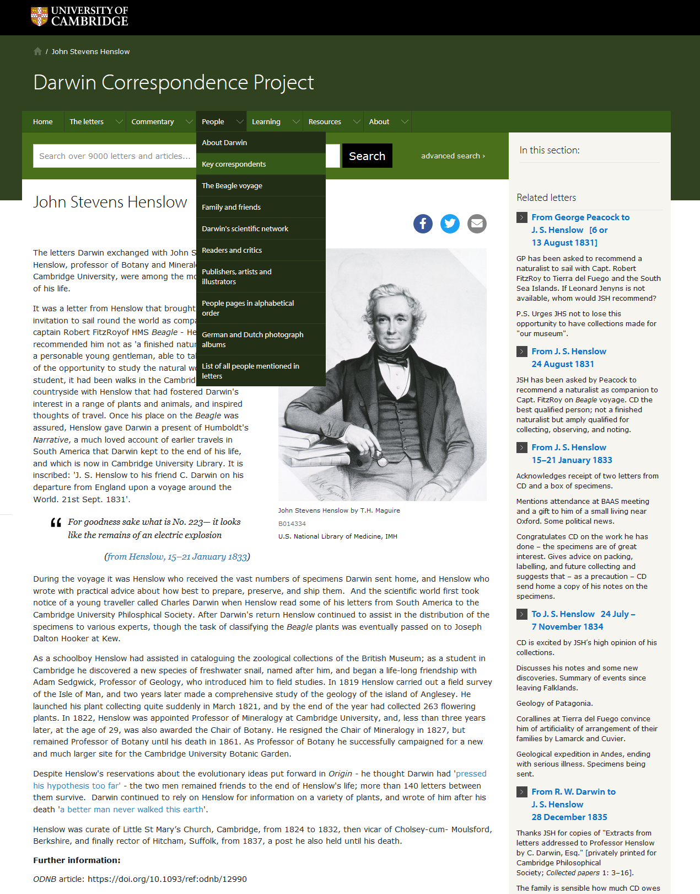
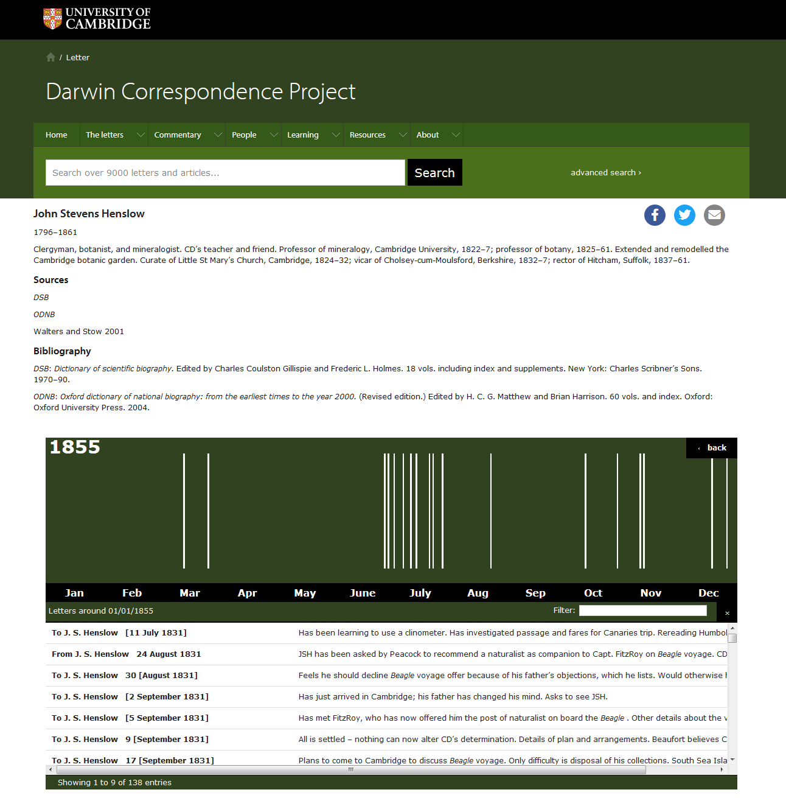
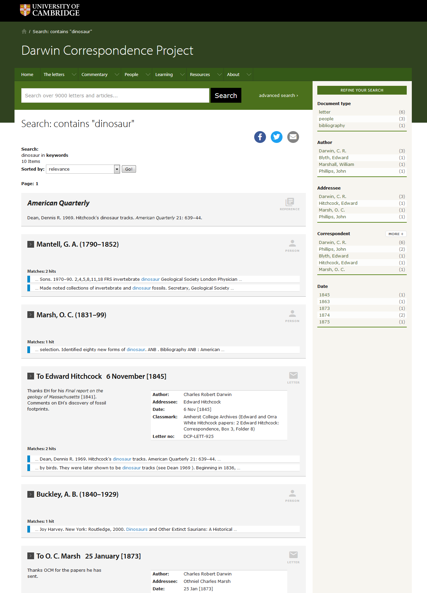

Darwin Correspondence Project
Table of Contents
Abstract
Charles Darwin’s correspondences are an invaluable resource for understanding his theories and works as well as English social life of the 19th century. About 15,000 letters are known, of which many appear for the first time in this hybrid print and digital edition of the Darwin Correspondence Project. It presents an authoritative edition of the letters from and to Darwin that is based on up-to-date scholarly standards and that is as comprehensive as possible. The completion of this project in progress is scheduled for 2022. Currently, all letters until 1875 are online with full transcriptions, and all remaining letters until Darwin’s death in 1882 are available in their metadata and summaries. Explanatory notes and extensive contextual essays provide valuable background information. The technical realisation of the project via the Epsilon framework is convincing as the edition is intuitively easy to use. It is, however, not possible to view the TEI-encoded files of the letters or to download the transcriptions and essays. With plenty of additional material, the Darwin Correspondence Project exceeds the scope of an edition and presents a widely interlinked online project that makes it a valuable and rich resource.
Introduction
With the name Charles Darwin (1809–1882) most people immediately associate the theory of evolution, natural selection, and the idea of the survival of the fittest. Darwin is counted among ‘the most influential figures in human history’,1 who radically changed the self-perception of mankind. However, Darwin not only conducted research in the field of evolution. He also worked in the fields of geology, palaeontology, zoology, and botany. During his lifetime lasting more than 70 years, he was in regular contact with numerous scientists, scholars, and savants, engaging in intellectual debate and discussing new ideas. Darwin was an observant contemporary of the 19th century and an important witness to the developments of his time.
Darwin maintained extensive correspondences with a large number of people, with friends, family members, colleagues, and fellow scientists. His letters—as well as the letters he received from many hundreds of correspondents—provide substantial insight into his intellectual and scientific networks as well as the development of his theories. Besides discussing his ideas with his peers, Darwin used letters to collect data, figures, and facts to support and verify his theories.2 He made marginal notes, colour coded subjects with pens and crossed out whole paragraphs of information already included in his writings. Darwin cut out pieces of information of the letters and filed them with his notes or stuck them into his experiment book.3 Many letters also contain diagrams, drawings, or specimens.4
It is evident that Darwin’s lifelong correspondences are an invaluable resource for understanding his life, his theories, and works. Information on more than 2,000 people mentioned in the letters5 portrays the social life of the English Gentry and (London) city life of the 19th century. The relevance of a complete and authoritative edition of the letters from and to Darwin based on up-to-date scholarly editorial criteria is beyond doubt. As Darwin unfortunately burned piles of old letters when he needed space to store new ones,6 there must be big losses and severe gaps. However, the number of surviving letters is remarkable: About 15,000 letters are known of which more than 8,000 letters are housed at the Darwin Archive at Cambridge University Library7—and new ones are discovered regularly as there is an active hunt for unknown or lost letters.8
Before the Darwin Correspondence Project, only selections of letters have been published with varying and obsolete standards of editing, e.g. The Life and Letters of Charles Darwin, edited by Charles’ son Francis Darwin in 1887 (F. Darwin 1887), followed by More letters in 1903 (F. Darwin, and Seward 1903).9 Some collections are out of print or insufficient as they contain transcription and dating errors (Burkhardt, and Smith 1985, xv). It was not until the Darwin Correspondence Project that an edition was realised, both authoritative and as comprehensive as possible.
The Darwin Correspondence Project

Objective of the project
The project understands its compilation as ‘the definitive edition’12 of Darwin’s correspondence. The target audience are students and researchers—not only in the natural sciences, but also in history, history of science, philosophy, and other fields of study—, educators, and the general public.13 It is a hybrid edition that combines printed volumes with a digital edition. The first publication of the project, A Calendar of the Correspondence of Charles Darwin, was a guide to Darwin’s correspondence with a chronological list of all letters written by and to Darwin published in 1985 (Burkhardt 1985).14 In the same year, the first printed volume of The correspondence of Charles Darwin was published containing letters from 1821 to 1836 (Burkhardt, and Smith 1985). Until now, 27 volumes have been published covering the letters until 1879. They appear on a yearly basis, and the completion of the intended 30 volumes is scheduled for 2022. Selections of letters of this edition are available as well, e.g. the correspondence from Darwin’s voyage around the world with the Beagle (Burkhardt 2008) or his correspondence with women (Evans 2017).15
Four years following the printed publication, transcriptions and the commentary are published online. Therefore, the letters from the first volumes spanning 1821 to 1875 are online with full transcriptions and all letters from 1876 onwards are available simply in their metadata and summaries. The introductory texts of the printed volumes are also published online16 without the four-year delay. The summaries of the letters, available online in the whole corpus, originate from the second edition of the Calendar from 1994.
Editorial policy and practice
Regarding the editorial guidelines, the basic precondition is to provide definitive transcriptions and to reach ‘a text that reproduces […] what Darwin actually wrote’ (Burkhardt, and Smith 1985, xv). Transcriptions are based on either original letters (and their digital facsimiles respectively) or the best available source against which they are checked several times.17 The original spelling by Darwin and his correspondence partners are retained, including mistakes. The paragraphs but not the line breaks seem to be reproduced. Unfortunately, more detailed information on single text phenomena and their editorial handling are missing from the section ‘Editorial policy and practice’. Hopefully, the editing guidelines will ultimately be made available online in greater detail.
Darwin often marked passages and made marginal notes and additions that were usually rather short but could also grow into texts of several (attached) pages (Burkhardt, and Smith 1985, xxix). These notes are handled in two different ways. First, notes on letters he received are documented in the section ‘CD annotations’18 and displayed under the transcription of the text. Here, line numbers are given but these refer to the printed edition and therefore might not be valid for the online presentation.19 Second, Darwin’s deletions, additions, and other changes to his own letters appear in the print edition in the appendix and not in the transcribed text. As the print edition’s chapter on editorial policy states, the ‘clear-text’ method was followed to keep the text free of brackets recording deletions, insertions, and other changes (Burkhardt, and Smith 1985, xxvi). At present, these changes can only be found in the print edition’s appendix, and are not included in the digital edition.20 They will probably be incorporated at some point in the future, although it is not stated clearly in the section ‘Editorial policy and practice’.21 Currently, however, this results in explanatory footnotes occasionally leading nowhere.22 Apart from that, the explanatory notes and appendices put the letters in context and give valuable information about references, mentioned people, and related published works.23
Technical implementation and layout

Display of the individual letter: Image, transcription, and metadata

Works and articles mentioned in the letters are identified in the footnotes that link to the section ‘Bibliography’ for each letter at the bottom of the page. Here, the full bibliographic information for many of the works mentioned is given.26 The ones still missing can be found with an additional query via the search box, and the information will surely be added later.27 Contrary to the search results for people, the search results for bibliographic items are just shown in a list in which the items are not clickable. Therefore, the books or articles do not have individual pages (yet?) where one might, for example, trace the steps to other letters with other correspondents in which a respective text was also mentioned.

Next to the transcription, the main metadata about each letter plus summary and citation are shown on the right. Each letter gets a unique identifier that is also part of its URL. Usually, the names of the sender as well as the addressee contain links to shorter or longer biography pages of these. The place from which the letter is sent is mentioned, but there seems to be no place register, as there are no links to a page or map with more details to the respective place. The source of the edited text is given, i.e. holding institution and archival number. Then the physical description follows. As the abbreviations in use are clearly defined, automatic replacement of these in the metadata section for immediate understanding would be preferable to the display of a phrase like ‘3pp damaged †, encl 1p’35 plus a link to a longer list of symbols and abbreviations.36 Recording the materiality of the letters and papers seems not to be the focus of the project as there is no information given on the state of preservation of the letter, the paper, script or ink used, the history of the letter, or its provenance (in addition to its current repository).
The summaries to the letters are very helpful to quickly get information about the content, and they sometimes put the letters into context, which makes it easier to understand their content.37 A citation for the whole edition cannot be easily found,38 but the citation for each individual letter as well as the volume of the print edition (but not the page) that contains the respective letter is conveniently displayed in the metadata section.

Index pages for people, internal interlinking, and search function




Back end
Regarding the back end and the technical implementation of the
edition, the information given is rather general and one would hope for a
more detailed documentation. For a research project that started over 40
years ago, it is a challenge to keep data formats up to date for efficient
performance and long-term sustainability. To ensure compatibility, the
Darwin Correspondence Project converted the data to TEI P5,
the de facto standard for encoding, editing, and exchanging text-centric
data in the field of Digital Humanities.47
These TEI files constitute the basis for both the print and the digital
edition.48
The Encoding Guidelines—as well as the Editorial Guidelines—are not
published yet but will be made available in the future.49
As the identification of ‘all the people, all the organisms and
publications, and all the places’50
plays a crucial role, it will be reflected in the TEI encoding. The project
also uses the TEI encoding model, developed in 2015, for correspondence
based on the element correspDesc for capturing
correspondence-specific metadata.51 Unfortunately, it is
not possible to view the TEI files of the letters or index entries although
this is considered good scholarly practice in digital editing.
The TEI files are imported into the open source software XTF
(eXtensible Text Framework) that enables the display of the transcriptions,
metadata, and the queries on the website.52
The project makes use of the digital infrastructure Epsilon53
that launched in September 2018. It serves as a collaborative public
platform, as a repository for TEI encoded texts, metadata and images.
Epsilon is ‘designed to link letter-texts from multiple sources for
cross-searching and analysis’.54
It focuses on letters of science from the 19th century
and aims at recreating networks of scientific knowledge. The necessity of
interlinking such correspondence materials as the Darwin letters has been
clearly seen in the project. Consequently, the Darwin Correspondence
Project and the Cambridge Digital Library are, amongst others,
founders of the Epsilon framework.55
The technical implementation is realised by mapping the data to TEI P5 using
the correspDesc element mentioned above.56
There have been efforts made to build metadata repositories for
collections of correspondence editions and to develop interactive
visualisation tools like the project ‘Mapping the Republic of Letters’,57
or to aggregate and search the metadata of several editions with one query
like the web service ‘correspSearch’,58 that analyzes files in the Correspondence
Metadata Interchange Format (CMIF) which is based on the
correspDesc element. These projects put emphasis on
metadata. Epsilon, however, aims at making the edited letter-texts
themselves searchable across several editions. Up to now, such an objective
has not been realised, and such a tool has been long-awaited by scholars
working with correspondence editions.
The project’s web page in its current version does not provide the possibility to download or harvest—and, therefore, to reuse—the transcriptions, metadata, TEI encodings, or any other of the numerous essays and texts via technical interfaces like OAI-PMH, or a general API. Even a print button is missing, and the printing function of the web browser does not go well with the layout of the web page. Hopefully, these aspects will be addressed soon.
Beyond a digital edition
It has become clear that the Darwin Correspondence Project goes beyond a ‘mere edition’ and in the direction of a dynamic and widely interlinked web project. Next to locating and researching all letters by and to Darwin to build up an inventory that is as complete as possible, the publication of the letter texts and the commentary is accompanied by extensive contextual essays and articles providing valuable background information. The essays in the section ‘Darwin's Life in Letters’,59 for example, describe and illustrate Darwin’s correspondences from that particular period, characterise key correspondence partners, and put them in relation to Darwin and his biography. Bibliographic references offer an extensive overview of relevant literature, and links to letters related to the person or topic discussed direct the user straight to those letters.
The Darwin Correspondence Project collaborates with the Cambridge Digital Library in publishing the images of the letters online at the project’s website and in making the transcriptions, the commentary and the summaries available in the Digital Library. For example, the letter by J. D. Hooker to Darwin from 29 December 1861 is accessible via the Darwin Correspondence Project and simultaneously via the Digital Library as part of the collection of the Darwin-Hooker Letters that comprises more than 2000 letters.60 There is also a collaboration between the two projects concerning the publication of Darwin’s manuscripts on evolution,61 as the letters contain invaluable information for editing these.
There are more online services to Darwin that the Darwin Correspondence Project integrates by linking to, e.g. the Darwin Manuscripts Project62 at the American Museum of Natural History, also in collaboration with the Cambridge University Library. When referring to published works, the Darwin Correspondence Project links to the online resource The Complete Work of Charles Darwin Online.63 Here, searchable texts, and images of all of Darwin’s published books and articles are made available. As online services to Charles Darwin are many and manifold, the Darwin Correspondence Project connects with these and puts its own content into a wider context, from which it then benefits.
Other ways in which the Darwin Correspondence Project exceeds the scope of an edition should be mentioned even if briefly. This concerns the teaching material (via the ‘Learning’64 tab) provided, which contains questions and tasks, activities, experiments, and videos for kids from the age of 7 up to university level. Furthermore, there is impressive audio and video material offered to the user: interviews with experts, conference talks, professional readings of selected letters, a BBC Radio drama based on Charles and Emma Darwin’s correspondence, as well as short films on Darwin, about editing his letters, the project, and about working in the Darwin archive.65 These materials as well as the social media activities of the project, like Twitter or Facebook,66 address different types of users, widen the user groups of the project, potentially introduce users to the edition, and spark interest for Darwin in those who not have had interest in reading his correspondence.
All in all, the Darwin Correspondence Project presents an authoritative digital edition with high scholarly standards. The project orients itself to state-of-the-art digital editing and meets these demands convincingly—as one can say on the basis of the current state of the web page. A closer look reveals that there is still a lot underdeveloped and not yet finished, as certain types of information are not interlinked within the project (names, works, mentioned letters, etc.), some minor mistakes can be found,67 and no (or only little) information on the current state of the page is available. The user does not know about additions or features to come. Editorial and technical documentation as well as Encoding Guidelines should be published online now (and not only when finishing the project in 2022 if that is intended) to make the edition more transparent as scholars and the public read and work with the substantial amount of already edited texts and essays. One wishes the greatest possible readership and reception for such a great project, and awaits curiously the remaining letters and, if intended, new essays and additional material with even more background information.
Bibliography
- Barlow, Nora, ed. 1933. Charles Darwin’s Diary of the Voyage of H.M.S. ‘Beagle’. Cambridge: Cambridge University Press.
- Barlow, Nora, ed. 1967. Darwin and Henslow, the growth of an idea. Letters, 1831–1860. London: Murray, Bentham-Moxon Trust.
- Burkhardt, Frederick, ed. 1985. A calendar of the correspondence of Charles Darwin. 1821–1882. New York: Garland Publ. Co.
- Burkhardt, Frederick, ed. 2008. Charles Darwin. The Beagle Letters. Cambridge: Cambridge University Press.
- Burkhardt, Frederick and Sydney Smith, eds. 1985–[2022]. The correspondence of Charles Darwin. Cambridge: Cambridge University Press. 30 vols. [Published so far until: Vol. 27: 1879. 2019.].
- Burkhardt, Frederick and Sydney Smith, eds. 1985. The correspondence of Charles Darwin. Vol. 1: 1821–1836. Cambridge: Cambridge University Press.
- Burkhardt, Frederick and Sydney Smith, eds. 1994. A Calendar of the correspondence of Charles Darwin. 1821–1882. With [corrections and] supplement. Revised edition. Cambridge: Cambridge University Press.
- Darwin, Francis, ed. 1887. The Life and Letters of Charles Darwin. London: Murray. 3 vols.
- Darwin, Francis and A. C. Seward, eds. 1903. More letters of Charles Darwin. A record of his work in a series of hitherto unpublished letters. London: Murray. 2 vols.
- Dumont, Stefan, 2018. ‘correspSearch—Connecting Scholarly Editions of Letters’, Journal of the Text Encoding Initiative [Online], 10, 2016. Online since 14 February 2018. http://journals.openedition.org/jtei/1742. DOI: 10.4000/jtei.1742.
- Evans, Samantha, ed. 2017. Darwin and Women. A Selection of Letters. Cambridge: Cambridge University Press.
- Secord, James Andrew (director), Samantha Evans, Shelley Innes, and Francis Neary (et al.), eds. 1985ff. Darwin Correspondence Project. Cambridge. https://www.darwinproject.ac.uk.
- Sloan, Phillip R. 2003. 'The making of a philosophical naturalist.' In The Cambridge Companion to Darwin, edited by Jonathan Hodge and Gregory Radick. 17-39. Cambridge: Cambridge University Press.
- Stadler, Peter, Marcel Illetschko, and Sabine Seifert. 2016. ‘Towards a Model for Encoding Correspondence in the TEI. Developing and Implementing <correspDesc>’. Journal of the Text Encoding Initiative [Online], 9. http://jtei.revues.org/1433. DOI: 10.4000/jtei.1433.
Notes
- https://web.archive.org/web/20180716170917/https://www.newscientist.com/round-up/darwin-200/. ↑
- https://web.archive.org/web/20191121090809/https://www.darwinproject.ac.uk/letters/about-letters. ↑
- https://web.archive.org/web/20191121090809/https://www.darwinproject.ac.uk/letters/about-letters. ↑
- https://web.archive.org/web/20191121091114/http://www.darwinproject.ac.uk/letters/darwins-life-letters. ↑
- https://web.archive.org/web/20191121091420/https://www.darwinproject.ac.uk/about/who-we-are. ↑
- https://web.archive.org/web/20191121091114/http://www.darwinproject.ac.uk/letters/darwins-life-letters. ↑
- https://web.archive.org/web/20191121091114/http://www.darwinproject.ac.uk/letters/darwins-life-letters. ↑
- https://web.archive.org/web/20191121090809/https://www.darwinproject.ac.uk/letters/about-letters. ↑
- Further selected editions are Barlow 1933, and Barlow 1967. ↑
- https://web.archive.org/web/20191121092720/https://www.darwinproject.ac.uk/about/history-project. ↑
- https://web.archive.org/web/20191121091420/https://www.darwinproject.ac.uk/about/who-we-are. ↑
- https://web.archive.org/web/20191121093454/https://www.darwinproject.ac.uk/about/publications/correspondence-charles-darwin. ↑
- https://web.archive.org/web/20191121090809/https://www.darwinproject.ac.uk/letters/about-letters, https://web.archive.org/web/20191121093454/https://www.darwinproject.ac.uk/about/publications/correspondence-charles-darwin. ↑
- A revised and enhanced edition was published in 1994 (Burkhardt, and Smith 1994). ↑
- https://web.archive.org/web/20191121104506/https://www.darwinproject.ac.uk/charles-darwin-beagle-letters, https://web.archive.org/web/20191121104632/https://www.darwinproject.ac.uk/about/publications/darwin-and-women-selection-letters. ↑
- They can be found in the section ‘Darwin's Life in Letters’: https://web.archive.org/web/20191121091114/http://www.darwinproject.ac.uk/letters/darwins-life-letters. ↑
- https://web.archive.org/web/20191121105426/https://www.darwinproject.ac.uk/letters/editorial-policy-and-practice. ↑
- E.g. https://web.archive.org/web/20191121111245/https://www.darwinproject.ac.uk/letter/DCP-LETT-1735.xml. ↑
- https://web.archive.org/web/20191121105426/https://www.darwinproject.ac.uk/letters/editorial-policy-and-practice. ↑
- E.g. the print edition records six alterations by Darwin in a letter to his father Robert Darwin from 23 October 1825 (Burkhardt, and Smith 1985, 573), but the digital edition does not give this information. https://web.archive.org/web/20191121112126/http://www.darwinproject.ac.uk/letter/DCP-LETT-16.xml. ↑
- The phrase that Darwin’s changes to his own letters are ‘not yet available’ suggests that an online presentation is intended, https://web.archive.org/web/20191121105426/https://www.darwinproject.ac.uk/letters/editorial-policy-and-practice. ↑
- E.g. the letter from Emma Wedgwood from 21–2 November 1838, https://web.archive.org/web/20191121141356/https://www.darwinproject.ac.uk/letter/DCP-LETT-441.xml: Emma complains that her fiancé Charles misspelt her name in a former letter. The commentary (footnote 8) states that ‘CD had corrected the salutation of his letter of [14 November 1838] from ‘Eras’ to ‘Emma’. See Manuscript Alterations and Comments for letter to Emma Wedgwood, [14 November 1838] [https://web.archive.org/web/20191121113825/https:/www.darwinproject.ac.uk/letter/DCP-LETT-437.xml].’ Following the link to the letter mentioned, no manuscript alterations or comments are shown. ↑
- https://web.archive.org/web/20191121093454/https://www.darwinproject.ac.uk/about/publications/correspondence-charles-darwin. ↑
- https://web.archive.org/web/20191121113825/https:/www.darwinproject.ac.uk/letter/DCP-LETT-437.xml. ↑
- E.g. the letter from Emma Wedgwood to Darwin from 21–2 November 1838 https://web.archive.org/web/20191121141356/https://www.darwinproject.ac.uk/letter/DCP-LETT-441.xml. ↑
- https://web.archive.org/web/20191121142829/https://www.darwinproject.ac.uk/letter/DCP-LETT-905.xml. ↑
- Sometimes, a query with the abbreviated bibliographic information does not deliver a result e.g. in the letter to Charles Lyell from 25 August 1845, https://web.archive.org/web/20191121142829/https://www.darwinproject.ac.uk/letter/DCP-LETT-905.xml, a bibliographic reference to ‘Wells 1815’ is given in footnote 4. In the bibliography, however, no entry can be found when searching for ‘Wells 1815’, https://web.archive.org/web/20191121145447/https://www.darwinproject.ac.uk/search/?keyword=wells+1815. But this information will probably be supplemented at a later date. ↑
- E.g. https://web.archive.org/web/20191121150138/https://www.darwinproject.ac.uk/letter/DCP-LETT-3046F.xml. ↑
- https://web.archive.org/web/20191121150340/https://www.darwinproject.ac.uk/about/technical. ↑
- E.g. there are drawings in a letter from Darwin’s brother Erasmus Alvey. The drawings are not reproduced, the edited text marks their occurrence with ‘[DIAGRAM HERE]’, https://web.archive.org/web/20191121151500/https://www.darwinproject.ac.uk/letter/DCP-LETT-3.xml. ↑
- https://web.archive.org/web/20191121091420/https://www.darwinproject.ac.uk/about/who-we-are. ↑
- https://web.archive.org/web/20191121151819/https://openseadragon.github.io/. ↑
- E.g. the added note by Emma Darwin to a letter by Charles Darwin from 13 January 1861, https://web.archive.org/web/20191121150138/https://www.darwinproject.ac.uk/letter/DCP-LETT-3046F.xml (second image). ↑
- E.g. a letter from Charles Darwin to Joseph Dalton Hooker from 15 January 1861 has seven pages and it takes some time to find the passage one is interested in https://web.archive.org/web/20191121152325/https://www.darwinproject.ac.uk/letter/DCP-LETT-3047.xml. ↑
- E.g. https://web.archive.org/web/20191121140347/http://www.darwinproject.ac.uk/letter/DCP-LETT-3374.xml. These abbreviations stand for ‘three pages, damaged, annotations by recipient [in this case Charles Darwin], enclosure one page’. ↑
- https://web.archive.org/web/20191115124848/http://www.darwinproject.ac.uk/letters/symbols-and-abbreviations. Occasionally the physical description is missing, e.g. https://web.archive.org/web/20191121150138/https://www.darwinproject.ac.uk/letter/DCP-LETT-3046F.xml. ↑
- There might be discrepancies between the summary and the edited text which will be eventually corrected finally, https://web.archive.org/web/20191121105426/https://www.darwinproject.ac.uk/letters/editorial-policy-and-practice. ↑
- It is unclear whom to cite as the main responsible editors for the edition or what the date of the initial publication is (or the date of the current version). ↑
- E.g. for the letter from Mary Congreve from 27 October [1821], https://web.archive.org/web/20191121153856/https://www.darwinproject.ac.uk/letter/DCP-LETT-1.xml, the tab, ‘Around this date’, omits this and several of the following letters and just shows letters from the end of 1822 at the top of the list. ↑
- https://web.archive.org/web/20191121154311/http://www.darwinproject.ac.uk/letter/?docId=nameregs/nameregs_2235.xml. ↑
- https://web.archive.org/web/20191121160617/https://www.darwinproject.ac.uk/letter/?docId=nameregs/nameregs_1218.xml. Further reading is offered on ‚Relevant Gender Resources‘ (however, all offered links seem to be place holders as they lead to empty pages), as well as further primary and secondary sources. ↑
- E.g. the essays of the section ‘Darwin’s life in letters’, https://web.archive.org/web/20191121091114/http://www.darwinproject.ac.uk/letters/darwins-life-letters, or some essays of the tab ‘Commentary’, e.g. ‘Natural selection’, https://web.archive.org/web/20191115125936/http://www.darwinproject.ac.uk/commentary/evolution/natural-selection. ↑
- Some index pages do not show letters in the time line and wrongly state that there are ‘0 letters exchanged’ which is very probably due to the project and web page still being in progress, e.g. https://web.archive.org/web/20191121160617/https:/www.darwinproject.ac.uk/letter/?docId=nameregs/nameregs_1218.xml. ↑
- E.g. just in transcriptions, commentary, or summaries, just in senders, addressees, or specific dates, https://web.archive.org/web/20191122084710/http://www.darwinproject.ac.uk/advanced-search. ↑
- Query for ‘J. S. Henslow’ via the advanced search: https://web.archive.org/web/20191122124238/https://www.darwinproject.ac.uk/search?text=§ionType=&search-correspondent=J.+S.+Henslow&year=&month=&day=&year-max=&month-max=&day-max=&search-date-type=on&exclude-widedate=Yes&f1-document-type=letter&smode=embedded; query for ‘J. S. Henslow’ via the general search within document-type ‘people’: https://web.archive.org/web/20191122124518/https://www.darwinproject.ac.uk/search?keyword=J.%20S.%20Henslow;f1-document-type=people. ↑
- It appears, however, only as the third-to-last search result: https://web.archive.org/web/20191122125109/https://www.darwinproject.ac.uk/search?keyword=John%20Stevens%20Henslow;f1-document-type=people. ↑
- https://web.archive.org/web/20191121150340/https://www.darwinproject.ac.uk/about/technical, https://web.archive.org/web/20191122150325/https://tei-c.org/. ↑
- https://web.archive.org/web/20191121092720/https://www.darwinproject.ac.uk/about/history-project. ↑
- https://web.archive.org/web/20191121150340/https://www.darwinproject.ac.uk/about/technical. ↑
- https://web.archive.org/web/20191121090809/https://www.darwinproject.ac.uk/letters/about-letters. ↑
- Chapter 2.4.6 Correspondence Description https://web.archive.org/web/20190123042448/http://www.tei-c.org/release/doc/tei-p5-doc/de/html/HD.html. Cf. Stadler, Illetschko, and Seifert 2016. ↑
- https://web.archive.org/web/20191121150340/https://www.darwinproject.ac.uk/about/technical. XTF is maintained by the California Digital Library, https://web.archive.org/web/20191122135109/https://xtf.cdlib.org/. ↑
- https://web.archive.org/web/20191122143535/https://epsilon.ac.uk/. ↑
- https://web.archive.org/web/20191122140017/https://www.darwinproject.ac.uk/Epsilon. ↑
- It is also funded by the Darwin Correspondence Project and Cambridge University Library, https://web.archive.org/web/20191122140017/https://www.darwinproject.ac.uk/Epsilon. ↑
- https://web.archive.org/web/20191122140017/https://www.darwinproject.ac.uk/Epsilon. ↑
- https://web.archive.org/web/20191118111452/http://republicofletters.stanford.edu/. ↑
- ‘correspSearch’ launched in 2014 and is maintained by the German Berlin-Brandenburg Academy of Sciences and Humanities, https://web.archive.org/web/20191122150122/https://correspsearch.net/. Cf. Dumont 2018. ↑
- https://web.archive.org/web/20191121091114/http://www.darwinproject.ac.uk/letters/darwins-life-letters. ↑
- https://web.archive.org/web/20191121140347/http://www.darwinproject.ac.uk/letter/DCP-LETT-3374.xml and https://web.archive.org/web/20191122151011/https://cudl.lib.cam.ac.uk/view/MS-DAR-00101-00001/1. The Cambridge Digital Library also offers the possibility of downloading the images (which the Darwin Correspondence Project does not). There are direct links from the Cambridge Digital Library to the given letter within the Darwin Correspondence Project that in turn offers a link not to the exact page but to the general homepage of the Cambridge Digital Library. ↑
- https://web.archive.org/web/20191122151345/http://cudl.lib.cam.ac.uk/collections/darwin_mss/1. ↑
- https://web.archive.org/web/20191122151556/https://www.amnh.org/research/darwin-manuscripts. This project also initiated the project of Darwin’s Virtual Library that offers digital images of Darwin’s books with transcriptions of marginalia, https://web.archive.org/web/20191122151836/https://www.biodiversitylibrary.org/collection/darwinlibrary. ↑
- https://web.archive.org/web/20191122152100/http://darwin-online.org.uk/. ↑
- E.g. for the ages from 7 to 11, https://web.archive.org/web/20191122152303/https://www.darwinproject.ac.uk/learning/7-11. ↑
- https://web.archive.org/web/20191122152616/https://www.darwinproject.ac.uk/tags/audio, https://web.archive.org/web/20191122152914/https://www.darwinproject.ac.uk/tags/video. ↑
- Each page (i.e. for individual letters, the essays, the biography pages etc.) offers share buttons for Twitter, Facebook, and e-mail, and the Darwin Correspondence Project maintains accounts for Twitter, Facebook, and Instagram, https://web.archive.org/web/20190818204529/https://twitter.com/mydeardarwin?lang=en, https://web.archive.org/web/20191123151120/https://www.facebook.com/MyDearDarwin/, https://web.archive.org/web/20191123151553/https://www.instagram.com/mydeardarwin/. ↑
- Some links might lead to nowhere, there is the occasional typo or missing space, names are given sometimes with initials, sometimes in full. ↑
@article{darwin-correspondence,
author = {Seifert, Sabine},
title = {Darwin Correspondence Project},
journal = {RIDE – A review journal for digital editions and resources},
number = {12},
year = {2020},
doi = {10.18716/ride.a.12.2},
url = {https://doi.org/10.18716/ride.a.12.2},
}TY - JOUR
AU - Seifert, Sabine
TI - Darwin Correspondence Project
T2 - RIDE – A review journal for digital editions and resources
IS - 12
PY - 2020
DA - 2020/07
DO - 10.18716/ride.a.12.2
UR - https://doi.org/10.18716/ride.a.12.2
PB - Institut für Dokumentologie und Editorik e.V.
LA - en
ER - Seifert, S. (2020). Darwin Correspondence Project. RIDE – A review journal for digital editions and resources, (12). https://doi.org/10.18716/ride.a.12.2Seifert, Sabine. "Darwin Correspondence Project." RIDE – A review journal for digital editions and resources, no. 12, 2020. https://doi.org/10.18716/ride.a.12.2.Seifert, Sabine. "Darwin Correspondence Project." RIDE – A review journal for digital editions and resources, no. 12 (2020). https://doi.org/10.18716/ride.a.12.2.